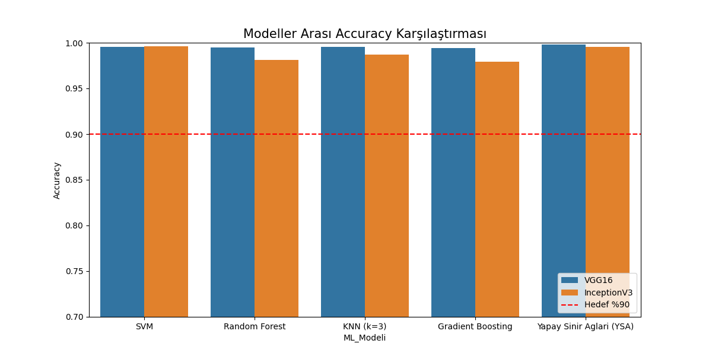
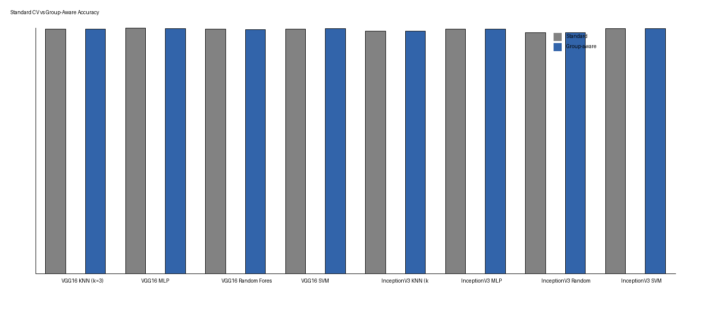
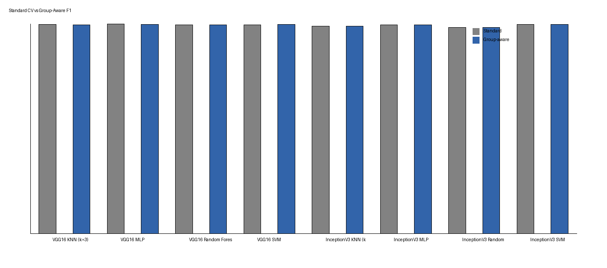
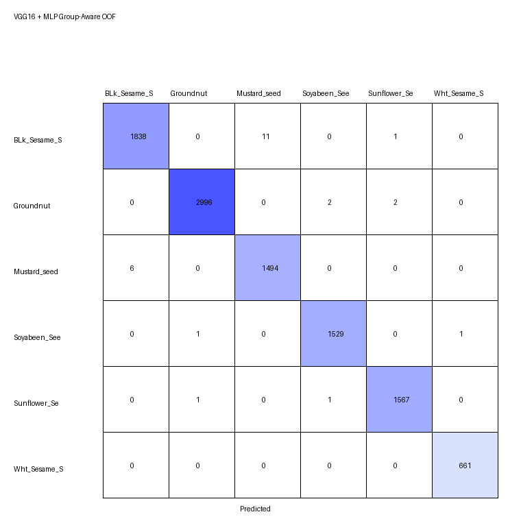

TÜBİTAK 2209-A
Classification of Edible Oil Seeds Using Hybrid Deep Learning and Machine Learning Methods
Selçuk University · Faculty of Technology · Department of Computer Engineering · Konya, Türkiye
Project date: May 2026
Abstract
This study classifies 10,111 images from six edible oil seed classes using fixed VGG16 and InceptionV3 feature representations and five conventional classifiers. The reported standard-validation best model, VGG16–MLP, achieved 99.8318% mean accuracy and 99.8340% macro F1. A separate feature-space group-aware stress test evaluates the stability of this result under near-duplicate constraints.
1. Project Overview
Automated visual identification can support sorting, packaging, storage, and quality control of agricultural products. This work is a machine-vision classification study; it is not a completed industrial sorting system.
2. Dataset
The Edible Oil Seed Dataset (V2) contains six imbalanced classes and 10,111 images. Stratification preserves class proportions across validation folds.
| Class | Images |
|---|---|
| Black sesame | 1,850 |
| Groundnut | 3,000 |
| Mustard | 1,500 |
| Soybean | 1,531 |
| Sunflower | 1,569 |
| White sesame | 661 |
| Total | 10,111 |
Edible Oil Seed Dataset (V2), Mendeley Data · DOI: 10.17632/x7h34tkwcp.2
3. Methodology
The original pipeline resized images to 224 × 224, applied a 3 × 3 Gaussian blur, converted values to float32, and normalized pixels by 255. Fixed CNN features were then classified with SVM, Random Forest, KNN, Gradient Boosting, and MLP.
4. Deep Feature Extraction
ImageNet-pretrained VGG16 and InceptionV3 were used with include_top=False and Global Average Pooling. Saved features were reused for the validation analyses; CNN extraction was not repeated.
| Model | Input | Pooling | Feature dimension |
|---|---|---|---|
| VGG16 | 224 × 224 × 3 | Global Average Pooling | 512 |
| InceptionV3 | 224 × 224 × 3 | Global Average Pooling | 2048 |
5. Standard Validation Results
These are the updated manuscript summary values for mean stratified 10-fold cross-validation. Accuracy and macro F1 are shown as percentages.
VGG16
| Model | Accuracy | Macro F1 |
|---|---|---|
| SVM | 99.6340% | 99.6444% |
| Random Forest | 99.4461% | 99.4777% |
| KNN | 99.6044% | 99.6334% |
| Gradient Boosting | 98.9516% | 99.0182% |
| MLP | 99.8318% | 99.8340% |
InceptionV3
| Model | Accuracy | Macro F1 |
|---|---|---|
| SVM | 99.6439% | 99.6695% |
| Random Forest | 98.1010% | 98.2774% |
| KNN | 98.7439% | 98.8753% |
| Gradient Boosting | 97.9526% | 98.0905% |
| MLP | 99.5352% | 99.5542% |
Historical Project Results
Earlier repository CSV values are retained separately in the result assets and are not mixed with the updated manuscript summary.

6. Group-Aware Near-Duplicate Validation
Because physical-seed IDs and capture-session IDs are unavailable, feature-space pseudo-groups were constructed within each class. Features were L2-normalized, cosine similarity thresholds were screened, and connected examples were joined with Union-Find. Group label purity was asserted before evaluation. Models were evaluated with StratifiedGroupKFold using n_splits=5, shuffle=True, and random_state=42.
Feature-space pseudo-grouping is a leakage stress test and does not replace true sample-level, acquisition-session-level, or external validation.
| Statistic | VGG16 | InceptionV3 |
|---|---|---|
| Similarity threshold | 0.9999 | 0.995 |
| Total groups | 9,232 | 10,082 |
| Multi-sample groups | 306 | 23 |
| Samples in multi-sample groups | 1,185 | 52 |
| Grouped samples | 11.72% | 0.51% |
| Largest group | 15 | 6 |
| Mean multi-group size | 3.87 | 2.26 |
| Exact duplicate features | 8 | 8 |
| Model | Validation | Accuracy | Macro F1 | Accuracy delta |
|---|---|---|---|---|
| VGG16-MLP | Standard 10-fold CV | 99.8318% | 99.8340% | — |
| VGG16-MLP | Group-aware 5-fold CV | 99.7429% | 99.7416% | −0.0889 pp |
| InceptionV3-SVM | Standard 10-fold CV | 99.6439% | 99.6695% | — |
| InceptionV3-SVM | Group-aware 5-fold CV | 99.6143% | 99.6494% | −0.0296 pp |
On the VGG16 side, 1,185 samples were affected by group constraints while the decrease remained below 0.1 percentage points. This suggests that simple near-duplicate leakage is unlikely to be the main explanation for the high result. InceptionV3 is more cautiously interpreted because only 52 samples entered multi-sample groups. These are group-aware validation estimates, not real-world accuracy.


7. Out-of-Fold Analysis
Best standard model: VGG16-MLP

8. Repository Architecture
EdibleOilSeed/ ├── docs/ │ ├── index.html │ ├── styles.css │ ├── script.js │ └── assets/ ├── models/ │ └── dl_features/ │ ├── vgg16_features.npy │ ├── vgg16_labels.npy │ ├── inceptionv3_features.npy │ └── inceptionv3_labels.npy ├── results/ │ ├── vgg16_comparison.csv │ ├── inceptionv3_comparison.csv │ └── group_aware/ │ ├── GROUP_AWARE_VALIDATION_REPORT.md │ ├── group_statistics.csv │ ├── validation_comparison.csv │ ├── performance_delta.csv │ ├── fold_results.csv │ ├── groups/ │ ├── confusion_matrices/ │ └── plots/ ├── src/ │ ├── preprocessing.py │ ├── feature_extraction.py │ ├── ml_classifiers.py │ ├── ml_inv3_classifiers.py │ └── group_aware_validation.py └── README.md
9. Updated Research Manuscript
Classification of Edible Oil Seeds Using Hybrid Deep Learning and Machine Learning Methods
Mahmut Esat Kolay · Murat Köklü
Research Article. The updated report presents the standard 10-fold summary together with the group-aware near-duplicate validation stress test. The repository project PDF is available below.
10. Limitations and Future Work
- Raw images were not processed again in the final publication rerun.
- Physical-seed IDs and capture-session IDs are unavailable.
- Pseudo-grouping does not replace true acquisition grouping.
- An independent external test set is not yet included.
- Independent validation under different cameras, lighting, and backgrounds is needed.
- Results must not be interpreted as industrial deployment accuracy.